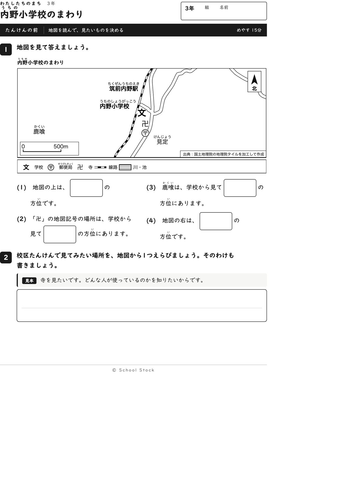
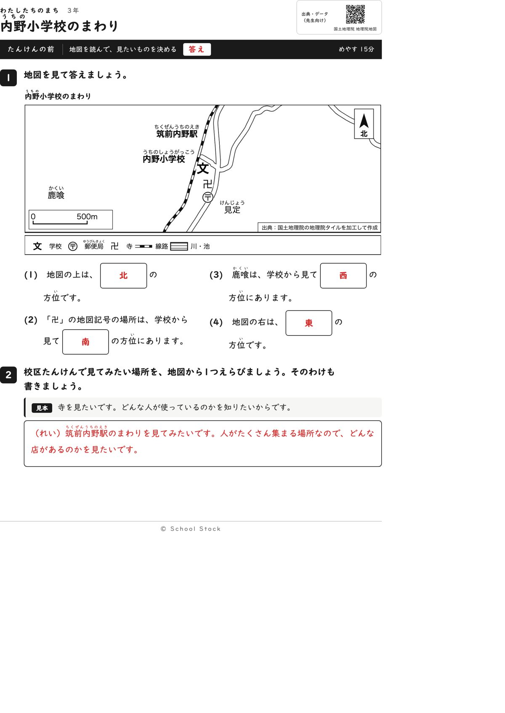
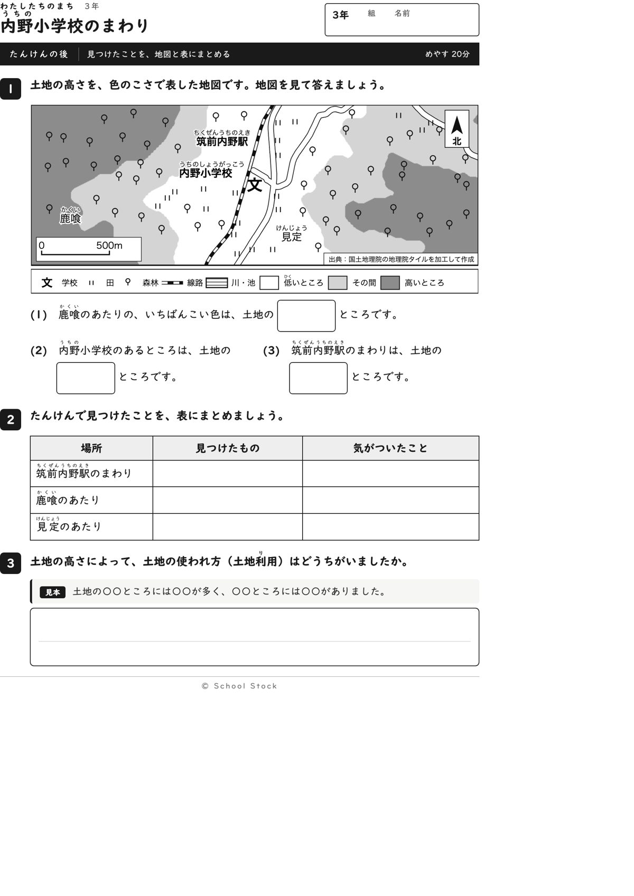
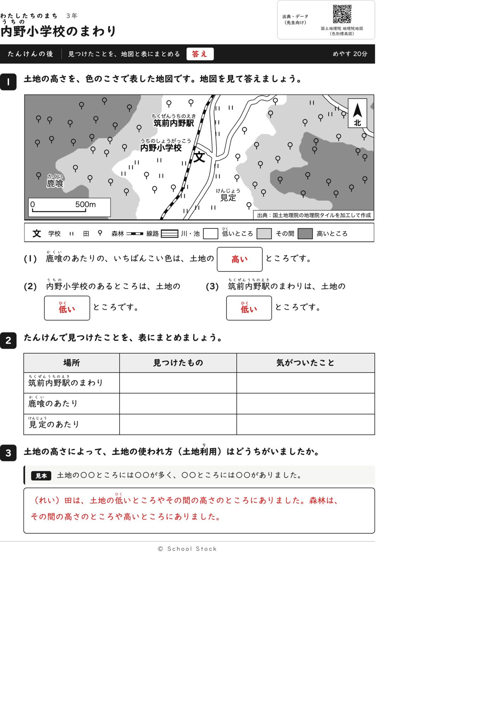
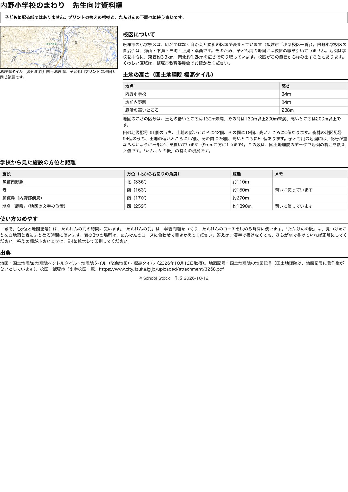

紙





直すところ
直すところはありません。
2回目のレビューで出た直し（1件・道具を直して作り直しました）
| 紙 | どこ | 何が困るか |
|---|---|---|
| 資料編 | 「土地の高さ」の節の、田と森林の記号の数の文 | 資料編には田61個、森林94個と書いてありますが、地図に描いてある記号は目で数えると田は25個前後、森林は55個前後で、ずっと少ないです。地図は9mmの区画に1つしか描かず、地名などの場所も避けているためです。先生が数えると合わず、答えの根拠を疑われます。 |
専門家団の声（いまの紙を見て）
香月八重筆頭・全学年
前は見たい場所を決める導入、後は高さと土地の使われ方のまとめで、用途が分かれて3年に合います。この紙でつかむことは、低い所には田、高い所には森林が多い、と一文で言えます。2回目に求めた点はありません。
日隈耕平社会
駅は北336度、寺と郵便局は南163度と170度、鹿喰は西259度で、地図と資料編が合っています。2回目に指摘した田61個、森林94個の食い違いは、資料編に「記号が重ならないように一部だけを描いています（9mm四方に1つまで）」と入って直りました。気になるのは、学校の「文」の左端が線路と道の端に触れていることと、後の地図で田の記号が線路の縁に乗っている所があることです。答えには響かないので好みの話にとどめます。
藤川湊すぐ終わる子
前の4問は1分で終わりますが、見たい場所を書く問2と、後の表と問3が残るので手持ちぶさたにはなりません。
田淵さくら例がないと止まる子
前の問2も後の問3も見本の文型があり、まねして書き出せます。表の3か所は見本の行がなく最初の1行は迷いそうですが、問3で取り戻せます。
轟大和読む前に諦める子
問いは1行から2行で、答えの箱が大きく、選ぶ問いは地図を見れば分かります。地名と駅名は模様や道に重なっておらず読めます。赤字の答えで自分で丸つけできます。